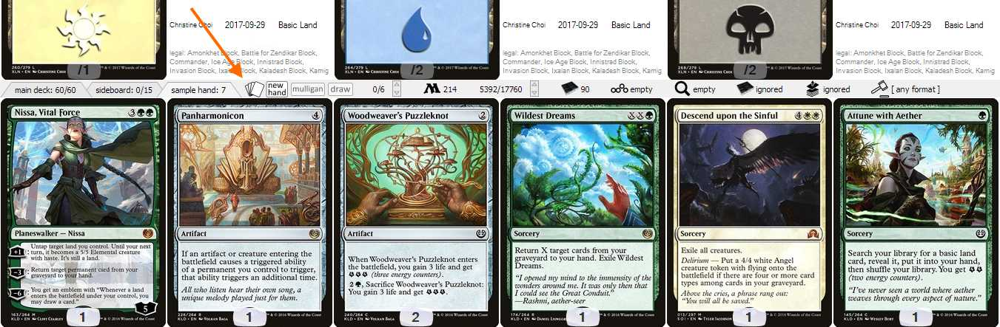
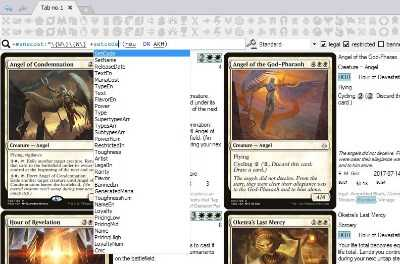
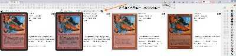
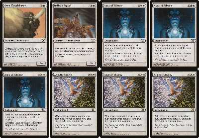

Home
Overview
Mtgdb.Gui is a free and opensource application for Windows to help Magic the Gathering players build decks. Card search features are well-thought, powerful and intutive. The search can be limited to the cards from user's own collection. Search for similar cards shows you cards with similar text and / or generated mana.
Mtgdb.Gui supports several ways to input decks and collection. Some of them are blazingly fast like drag-n-drop as well as copy and paste operations from other applications or websites.
Decks can be saved in various formats compatible with other MTG-related applications such as Magic the Gathering Online, Forge or XMage.
Diagrams give you a high-level understanding of what is your current workset like. The simplest example of a diagram is mana curve.
You can analyze your deck or collection from different angles by building your own diagram. It is conceptually the same as building pivot table or pivot diagram in Excel.
Feature list
| Feature | Illustration |
|---|---|
| Database contains all MTG sets up to Core Set 2019 and Commander 2018 |

|
| Built-in update. Images, data and the program itself are updated from Update window |

|
| Import collection from Magic The Gathering Online. You can also load and save decks in MTGO-compatible format. | details |
| Drag-n-drop and copy-paste deck to instantly import deck from websites and external applications | details |
| Deck editor | details |
| Collection editor | details |
|
Sample hand, draw and mulligan simulation |
 |
| Supported deck formats |
Cockatrice
supports the deck format used by Magarena
Patched by me Riiak's DotP 2014 Deck Builder supports Forge
deck format
|
| Filters | |
|
One-click filter buttons
let you instantly filter
cards by common properties such
as abilities |

|
|
Search by text in Lucene query language. Search string supports syntax highlighting and intellisense. Search for similar cards shows you cards with similar text and / or generated mana. |
 |
| Filter by legality | |
| Filter by cards in your collection |

|
| Filter by cards in your deck | |
| Choose between AND / OR operators to combine filters | |
|
Show or hide card duplicates in search result. Namesakes can be confusing when creating a deck or building some statistics. But sometimes you want to put into your deck a specific version of a beautiful island. Check |
 |
|
Sort by most fields, sort by multiple fields |
|
|
Diagrams |
|
|
Zoom |

|
| Showing card back for flipped cards or meld pair / melded card for meld cards | details |
|
Undo / redo changes in deck, filters and so on. Works even after closing the program and starting it again. |

|
| Translations to all languages supported by Gatherer. Including russian, spanish, portugal and etc. | |
| Printing proxies on A4 paper |  |
| Tooltips on most user interface elements | |
| Search result highlighting |

|
| Using images from Mtgdb.Gui in Forge. With High Quality images anything gets prettier :) | details |
| Using card images you already have with Mtgdb.Gui | details |
| Showing the last card removed from deck in search result even if it doesn't matches filter | The people who used Magic Duel's online deck builder will understand me. It is such an annoying thing when you have a filter, then you remove a card, and you cannot quickly undo as the card disappears from search result. |
| This help can also be considered a feature worth mentioning | Â |
{kind=link}
{kind=link}
{kind=link}
{kind=link}
{kind=link}
{kind=link}
{kind=link}
{kind=link}